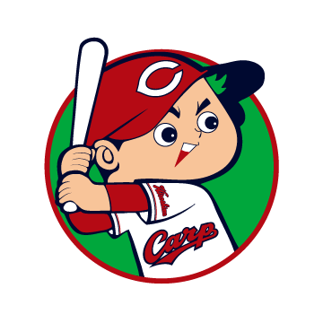
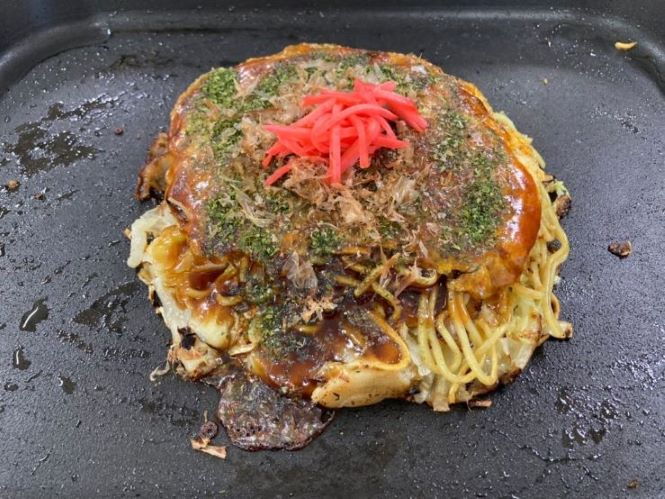

広島県の魅力とは？
広島県は知っているが、原爆ドームやカープくらいしか思いつかない…と言う人はいませんか？
実は、広島県には色々な魅力があるんです。


魅力その1「元気」
野球やサッカー、バスケットボールなどの数多くのスポーツクラブの活動拠点があります。
それに、原子爆弾によって焦土と化してしまった広島県に、大都市を作り上げました。
魅力その2「おいしい」
お好み焼きや牡蠣、郷土料理などのいろいろな食材があります。
瀬戸内海では、季節に合わせていろいろな魚をとることができます。

魅力その3「暮らしやすい」
都市と自然が近いので、都市に居てもすぐに自然を感じることができる場所へ行くことができます。
伝統の心を受け継いだ芸能や工芸が、全国的に注目されています。